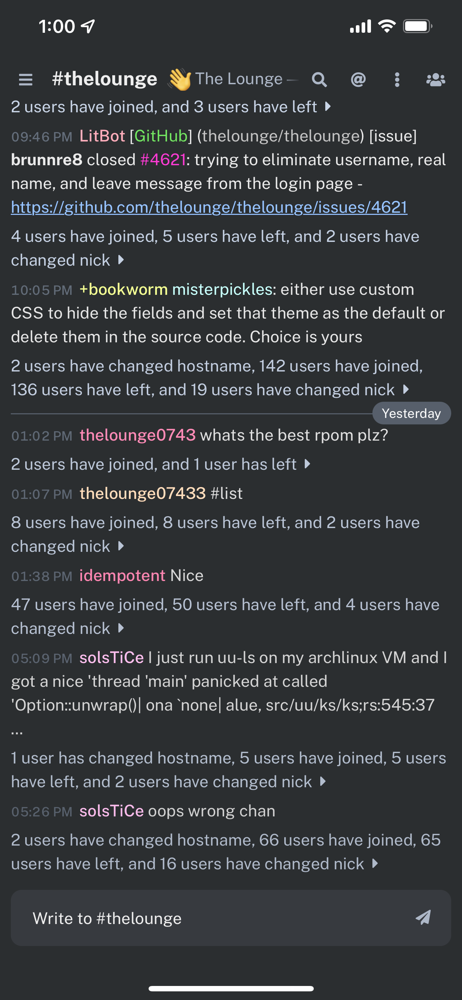

by easymac
Chord is a visual alternative offering pleasant appearance and specific improvements in mobile usability, support for devices with rounded screens, and an emphasis on type & legibility.
If you installed The Lounge witha package manager:
thelounge install thelounge-theme-chord
If you installed The Lounge from source:
node index.js install thelounge-theme-chord
Below are snippets designed to be pasted in the custom stylesheet settings field to offer basic tweaks and personalization.
Gives bots a monospace font so ASCII and other formatting is rendered
correctly. Replace BOT_NICKNAME with the bot's nick, and
replicate the snippet for every bot you want to style.
/* Monospace font for better ASCII */
#chat .msg[data-from=BOT_NICKNAME] .content {
font-family: monospace !important;
color: #888;
}
/* Reduce line height to 1.0 for better ASCII */
#chat .msg[data-from=BOT_NICKNAME] .time,
#chat .msg[data-from=BOT_NICKNAME] .from,
#chat .msg[data-from=BOT_NICKNAME] .content {
padding-top: 0;
padding-bottom: 0;
}
#chat .msg[data-from=BOT_NICKNAME] .content span {
display: inline-block;
}
#chat .msg[data-from=BOT_NICKNAME] {
margin-bottom: 0;
}
/* Restore spacing for non-bot messages adjacent to bot messages when using
* the previous block.
*/
#chat .msg[data-from=BOT_NICKNAME].previous-source + .msg:not(.previous-source) {
padding-top: 3px;
}
/* Hide timestamps for consecutive bot messages */
#chat .msg[data-from=BOT_NICKNAME].previous-source .time {
visibility: hidden;
}#chat .msg.self .user {
color: #236BFF;
}To change your color in the userlist, you have to hard-code your nick:
.user[data-name=YOUR_NICKNAME] {
color: #236BFF;
}(This can also be used to change the nick colors of other users)
:root {
--chat-wrap-width: 1200px /* default */
}:root {
--update-available: 0;
}